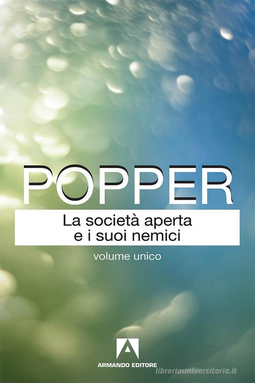
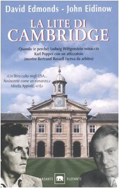

15:16 · 4 OPERE
La società aperta e i suoi nemici
Il filo del discorso
Dr Divago presenta una lettura fortemente critica di La società aperta e i suoi nemici, soffermandosi sulla rappresentazione di Platone e di Eraclito. Dopo aver richiamato la composizione dell’opera durante la guerra, contesta il metodo con cui Popper ricondurrebbe la filosofia antica alle origini del totalitarismo. La discussione passa dalla teoria delle forme al compito educativo della Repubblica. Un riferimento a La lite di Cambridge accompagna il finale sul rapporto fra competenza filosofica, autorità dei grandi autori e concezione della democrazia.
I libri nel discorso

La società aperta e i suoi nemici
Copertina: Armando Editore · Classici · 2018 · volume unico
Copertina autentica di riferimento, controllata visivamente. L’edizione non è identificata come quella usata nel video.
Titolo e autore sono annunciati come oggetto principale della recensione.
Passaggio 0:24 ↗ · Fonti e libro ↗
Minima moralia
Identificazione probabile
Copertina: Einaudi, 2015
Il relatore ricorda un passo di Adorno con esitazione sul volume; collegamento probabile a Minima moralia.
Passaggio 3:39 ↗ · Fonti e libro ↗
La Repubblica
Copertina: Laterza · La Repubblica · edizione con testo a fronte di riferimento
Immagine associata all’ISBN di riferimento e controllata visivamente; edizione e traduzione non identificate come quelle citate o lette nel video.
È nominata la Politeia, titolo greco della Repubblica.
Passaggio 10:58 ↗ · Fonti e libro ↗
La lite di Cambridge
Copertina: Garzanti · Gli elefanti saggi · 2005 · traduzione di Andrea Buzzi
Copertina autentica di riferimento, controllata visivamente. L’edizione non è identificata come quella usata nel video.
La lite di Cambridge è nominata insieme agli autori, normalizzati mediante riscontro bibliografico.
Passaggio 13:00 ↗ · Fonti e libro ↗